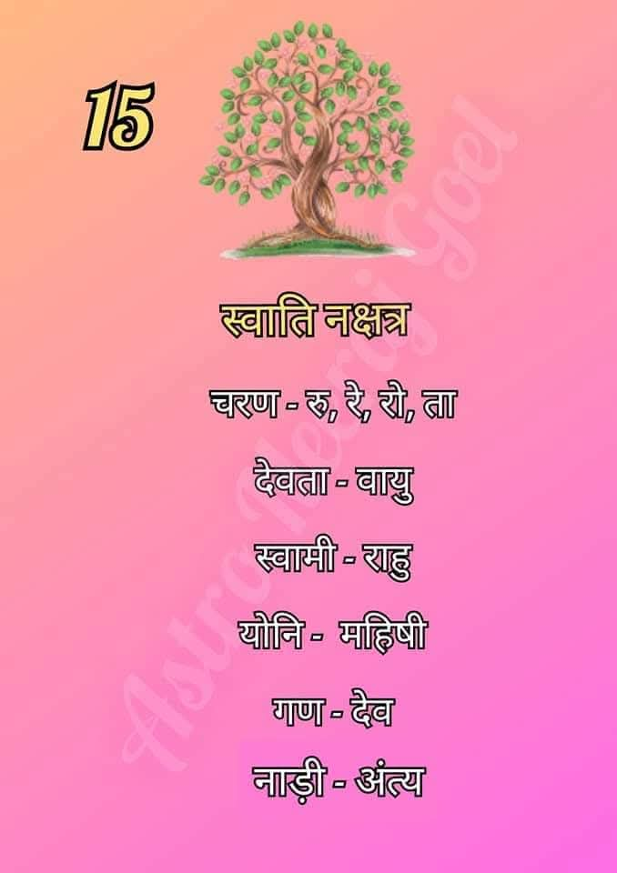

स्वाति नक्षत्र (Swati Nakshatra)
स्वाति नक्षत्र आकाश मंडल का पंद्रहवां नक्षत्र है। इसे 'वायु' या 'पवन देव' का नक्षत्र माना जाता है, जो गतिशीलता, स्वतंत्रता और लचीलेपन का प्रतीक है।

सामान्य स्वभाव:
स्वाति नक्षत्र में जन्मे जातक स्वतंत्र विचारों वाले, मिलनसार और बुद्धिमान होते हैं। हवा की तरह चंचल और अनुकूलनशील होने के कारण ये किसी भी परिस्थिति में स्वयं को ढाल लेते हैं।
स्वाति नक्षत्र की मुख्य विशेषताएँ
- स्वतंत्रता प्रिय: इन्हें बंधनों में रहना पसंद नहीं होता और ये अपनी शर्तों पर जीना पसंद करते हैं।
- कुशल संचारक: इनकी वाणी में मधुरता और तर्कशक्ति होती है, जिससे ये आसानी से दूसरों को प्रभावित कर लेते हैं।
- अनुकूलनशीलता: ये बहुत लचीले होते हैं और बदलते समय के साथ खुद को जल्दी बदल लेते हैं।
- ज्ञान के प्रति रुचि: ये जिज्ञासु होते हैं और जीवन में हमेशा नया सीखने का प्रयास करते हैं।
- न्यायप्रिय: ये नैतिक मूल्यों का पालन करने वाले और संतुलित स्वभाव के होते हैं।
शिक्षा एवं करियर
स्वाति नक्षत्र के जातक अपनी संचार क्षमता और बौद्धिक कौशल के कारण निम्नलिखित क्षेत्रों में अधिक सफल होते हैं:
- व्यापार एवं वाणिज्य (Business & Commerce)
- शिक्षण एवं परामर्श (Teaching & Consulting)
- संचार एवं पत्रकारिता (Media & Journalism)
- राजनीति एवं जनसंपर्क (Politics & Public Relations)
- वायुयान एवं परिवहन क्षेत्र (Aviation & Transportation)